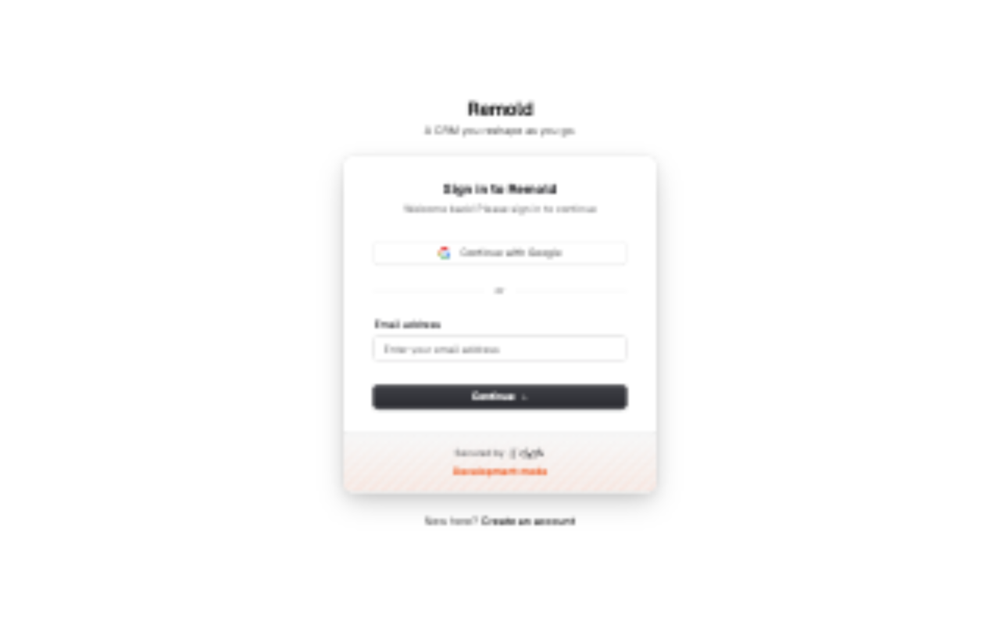
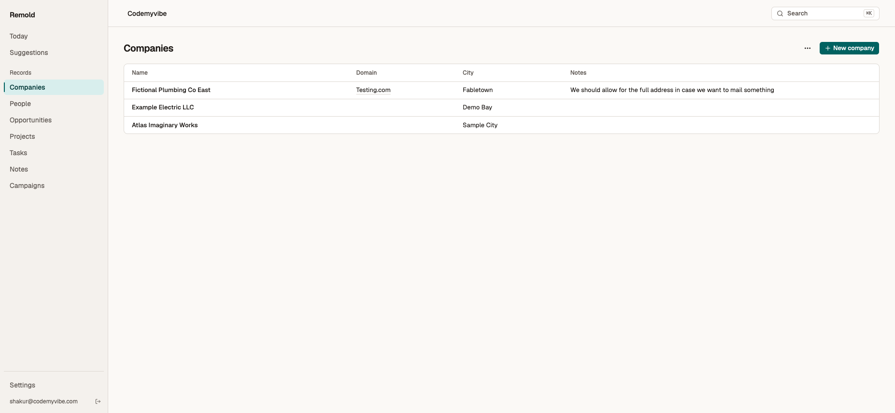

https://nautical-viper-899.convex.site instead of gallant-pika-581.index-rIzLqg-9.js (was index-BdUsyEab.js, Clerk). Cloudflare version bedaee45-525e-4e2b-9c17-505445ebfc25.nautical-viper-899 created; code from dced42d deployed.gallant-pika-581 (sha256 664e87a4…) and imported. Re-export compared per table: 17 tables, 0 mismatches (1 user, 1 org, 16 records, 38 fields, 7 objects, 2 agents, 27 events, 3 suggestions, 1 link, 1 member).https://app.remoldcrm.com/callback, sign-out https://app.remoldcrm.com, CORS origin https://app.remoldcrm.com. Re-read after page reload; all prior entries kept.kh74gfj79fms7mk2x7w3fx56ts8ewy52; Companies (3) and People (4) match the old data after a full reload.| Before | After |
|---|---|
 Clerk dev sign-in, dev database |  New build, signed in, existing companies |
bun x wrangler@4.138.0 rollback 8f0763b2-22e5-4f78-b2ca-0a4e994c8f78 restores the old site on the untouched old database. Anything created on the new site after the switch lives only in nautical-viper-899 and would need copying back.
curl -s https://app.remoldcrm.com | grep index- shows index-rIzLqg-9.js.~/scratch/remold-cutover/live-before.zip.